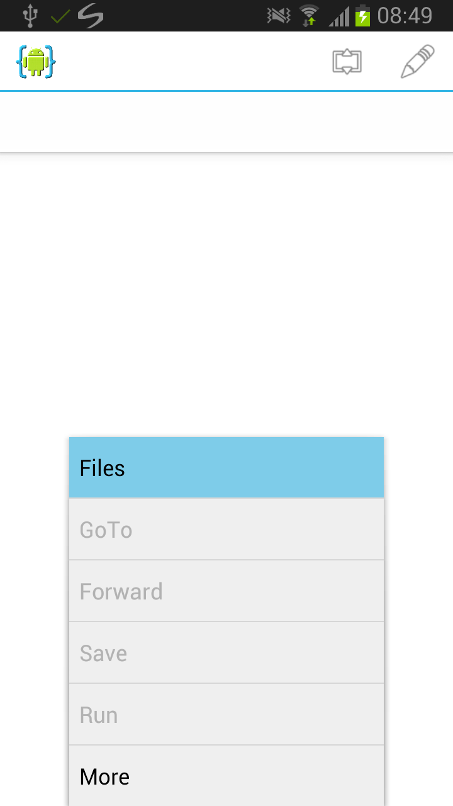
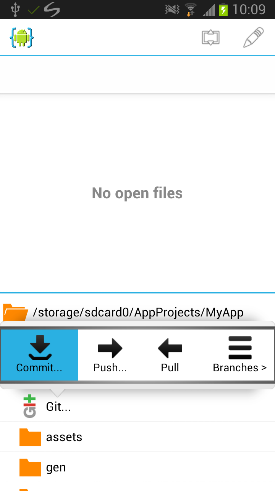
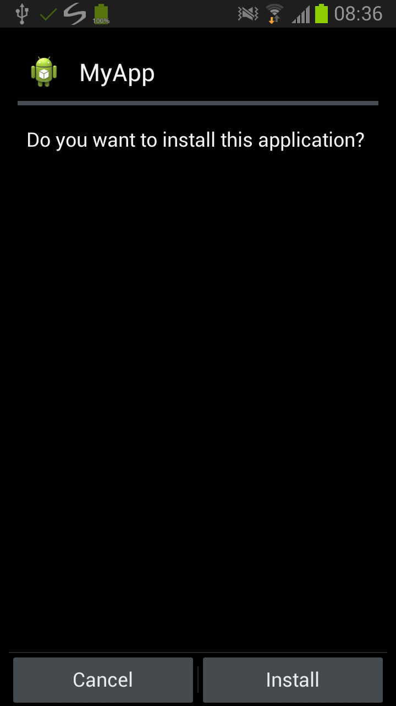

AIDE 深度盘点：把 Android 开发台搬进手机，它到底能扛多少活？
AIDE 是一款把 Android IDE 完整搬到手机上的开发工具——代码补全、界面设计、Git 版本控制、即时构建一条龙。这篇盘点从能力域到短板，帮你看清它的边界到底在哪。
在电脑上写 Android 应用已经是一件够折腾的事了：Gradle 构建、模拟器、Android Studio 那套又厚又重的生态。AIDE 干了一件反直觉的事——把整个 Android 开发台直接塞进手机里。不是"轻量编辑器"那种阉割版，而是真的能写、能编、能跑、能调的完整 IDE。从AIDE官网能看到，超过两百万的下载量背后，是一群把手机当开发机的人，还是只是新鲜两天就放下的玩具？这篇盘点把它的能力面完整铺开给你看。
能力域一：项目入口——四条路进来，总有一条顺
AIDE 最务实的一点，是不强迫你从零开始。它提供了四种把项目带进手机的方式，覆盖了绝大多数人的工作习惯。
最直接的是 SD 卡复制——USB 数据线一连，把电脑上的 Eclipse 项目文件夹往里一拷，AIDE 扫一眼目录结构里的 .project 文件，直接弹开项目。这条路对老 Android 开发者特别友好，因为 Eclipse 项目它是完整兼容的，打开即用，没有迁移成本。
如果你的项目早就推到 GitHub 或其他 Git 平台了，Git 克隆才是推荐路径。在 AIDE 内置的文件浏览器里找个目录，选克隆远程仓库，填 URL 和文件夹名——私有仓库配好 SSH 密钥就能拉。这意味着你在任何一台有网络的设备上都能接棒写代码，不必把项目拷来拷去。
还有 Dropbox 同步这条路。把电脑上的项目文件夹扔进 Dropbox，AIDE 登录后就能自动保持双向同步——你在手机上改的每一行代码，电脑那边立刻能看到，反过来也一样。适合习惯了云盘工作流的人。
最后一种叫自动识别——无论你用哪种方式把文件落到手机上，AIDE 都会主动扫：看见 build.gradle 就问你要不要当 Android Studio 项目打开，看见 Java 目录结构就提议当作 Java Console 项目，看见 .git 目录就挂上版本控制菜单。不用你手动指定项目类型，它自己会看。
不过 Android Studio 项目在这里有个明确的天花板：基础项目结构能识别、Java/Kotlin 源码能编辑，但完整 Gradle 构建系统不支持。复杂的 flavor、build types、自定义脚本都解析不了，依赖管理也得手动来。如果你的项目深度绑定了 Gradle，要么导出成 Eclipse 格式，要么把核心代码单独拎出来在 AIDE 里开发。

能力域二：版本控制——Git 全链路在手机上
写代码不做版本控制等于裸奔。AIDE 把 Git 完整搬进了手机，从看状态、看 diff 到 commit、discard 一条都不缺。
Git 提交的对话框设计得很清晰：文件列表勾选你想包含的变更，每个文件都能点开看 diff——绿色是新增，红色是删除，提交前扫一眼能帮你确认有没有把不该加的东西塞进来。commit message 它不替你写，但会推荐你按"做了什么 + 为什么做"的格式来，比只写个 update 强得多。discard 按钮能把选中的文件恢复到上一次 commit 的状态——这功能好用但手滑要小心，改坏了想回滚的是整个文件而不是某个片段。

不过 Git 这块有个关键限制：commit 功能是 Premium Key 锁着的。免费版能看状态、看 diff、甚至能创建本地仓库，但就是不能 commit。这意味着免费用户没有版本历史——写坏了回不去，Run 成功了也存不住快照。Premium Key 9.99 美元，Git 重度用户几乎是必须买的。
提交粒度它不替你把关，但AIDE文档里推荐的做法很值得参考：完成一个功能后提交、修完一个 bug 后提交、每次 Run 成功后提交。反过来的反例也列了——写两行就 commit 太碎、不相关的改动塞一个 commit 以后定位问题要骂娘。
能力域三：交互式教程——边写边拿星星
这是 AIDE 最面向新手的一块，也是跟市面上其他手机编辑器差异最大的功能。普通教程是"你跟着写，对不对自己判断"，AIDE 的内置教程是"系统在你写代码的过程中实时检查，写对了自动通过，写错了立刻给提示"。
教程分两类：Android Apps 走 Activity、布局、Intent、菜单这条入门路径，Java Programming 练变量、循环、方法、类这些语法基础。每个教程分成多个步骤，左边任务说明加提示，中间是预先填好部分代码让你补全的编辑器，右边是运行和检查按钮。你每写一行，教程系统就在背后跑检查——类型错了提示"这里应该写 int 而不是 String"，格式对了直接跳到下一步。
完成每个教程还能拿星星。首页会显示你的星星数量，作为学习进度的可视化指标。这听起来有点像游戏化学习，但对完全没接触过编程的人来说，完成一个步骤立刻通过的正向反馈，比对着书苦啃要友好太多。文档里给新手排了一条建议路径：先刷 Java Programming 打基础，再从 Hello World 教程开始碰 Android UI，一路到菜单和对话框——按这个顺序走，不用自己瞎猜。
教程内容深度是入门级够用的那种，真要深入还得找外部资源。但先用它把基础打牢，遇到覆盖不到的内容再去查外部资料，是个不错的组合。
能力域四：构建与运行——终极形态是 Root + Premium
在普通手机上，装好 AIDE 之后，Run 一下的流程是：构建 → 系统弹出安装对话框等你点确认 → 弹出"安装完成"等你点"打开" → 应用启动。安装包从官方下载拿就行，两次弹窗加上用户交互，一次开发循环大约十秒。
但如果你同时满足三个条件——设备已 Root、Premium Key 已安装、AIDE 拿到了 Root 授权——Run 的流程会变成：构建完成 → 静默安装（无 UI）→ 自动启动。零弹窗，零手动确认，一次循环压缩到五秒左右。这是 AIDE 开发体验的终极形态。

静默安装本质上是 AIDE 通过 Root 权限执行了 su -c pm install 命令，跳过了系统安装界面。第一次 Run 时 Superuser 管理应用会弹授权请求，选"允许"并勾上"总是允许"以后就不再弹窗了。除了静默安装，Root 设备还能访问 /data/data/ 下其他应用的数据、绕过 Android 分区存储限制获得完整文件浏览器权限，部分底层操作速度也能上来一些。
当然 Root 有风险——部分厂商保修失效、系统安全防线降低、某些银行和支付类应用可能跑不起来、OTA 更新可能失败。这些跟 AIDE 本身没关系，但属于常识必须提。如果你只是日常开发，不 Root 也能用，两次弹窗是可控的。
短板也要说
盘点到这里，AIDE 的能力面已经铺开了。但几个明确的短板不能回避。
最扎眼的是 Premium 锁的范围。Git commit 锁了，静默安装锁了，Root 相关的高级功能也锁了。免费版能做的事情其实不算少——编辑、构建、运行、看 diff——但真要长期用、做正经项目，Premium Key 几乎绕不开。这是 AIDE 的商业模式决定的，没有免费午餐。
Android Studio 项目的支持深度是第二个硬伤。只识别基础结构、不支持完整 Gradle 构建系统，意味着用了 flavor、多模块、复杂依赖的项目基本别想直接搬过来。这不是 AIDE 不想做，是 Gradle 本身就不是为移动端设计的，强行兼容的成本极高。
还有一个隐性短板：键盘和屏幕。手机屏幕再大也不过七寸，虚拟键盘再顺手也不是实体键。写代码这件事，屏幕空间和输入效率是硬约束。AIDE 把 IDE 搬过来了，但物理限制它搬不过来。
什么样的人该用它
三类人最能吃 AIDE 的价值。
第一类是出门在外的开发者。比如在咖啡馆、地铁上、任何只有手机没有电脑的场景——Git 克隆拉下来、改几行、commit、推回去，整个流程在手机上就能闭环。不用等回电脑、不用开远程桌面，掏出手机就能干活。对习惯了碎片化开发的人来说，AIDE 是真正能用上的生产力工具。
第二类是想在移动设备上学编程的新手。交互式教程的实时检查和星星系统，比对着书或视频自己瞎试效率高太多。Java 基础打牢以后直接过渡到 Android 应用，学习路径在一个 App 里就能走完。不需要配环境、不需要装模拟器，打开 AIDE 就能开始。
第三类是Root 设备上的折腾党。Root + Premium 的静默安装体验加上文件浏览器不受限制的权限，把手机当成真正的开发机来用。构建运行循环五秒一次，效率不比电脑差多少——前提是你愿意为这个体验付出 Root 的风险和 Premium 的费用。
反过来说，如果你大部分时间都在电脑上开发、项目深度依赖 Gradle 和 Android Studio 的完整生态、或者只是偶尔想改几行代码——AIDE 可能只是个锦上添花的补充，而非必需品。
这套中文资料同时维护了三份远端——GitHub 主仓库、Gitee 国内镜像、GitCode 同步副本，不同网络环境下都能顺畅取阅和贡献。